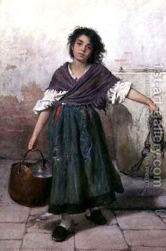

Bava Metzia 82 - Porter Breaks a Keg

When a porter carries someone’s keg from one place to another, he has the legal responsibility of a custodian. If he accidentally slips and breaks the keg, then Rabbi Meir says that whether he is paid or not, he can swear and free himself from liability.
Rabbi Yehudah says that slipping is negligence. Therefore, a paid porter is liable for it, as any paid custodian, but an unpaid porter is not.
And Rabbi Meir? He agrees that stumbling is considered negligence, but since people are usually not careful about it, the Rabbis made a decree that a porter can be absolved through an oath, because otherwise nobody will move a keg of his fellow. He swears that he did not break it deliberately.